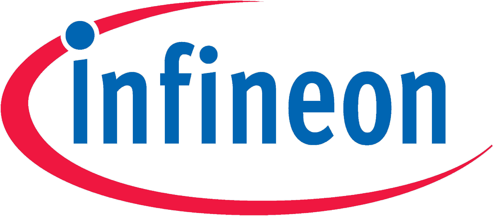

Our focus · Supply chain & semiconductors
From silicon to shipped hardware, through Taiwan.
Most of the world's advanced chips and a deep bench of display, board and assembly houses sit on one island. We know it layer by layer, and we know which houses will take a first order from a foreign team.
01
Silicon
Foundry and design-house strategy: dual-foundry questions, node selection, and where capacity is actually constrained.
02
Displays & optics
Display technology strategy for automotive, and scouting across MicroLED, light-field and holographic optics.
03
Components & boards
Bill-of-materials review against real Taiwan capability: where the island is deep, where it is thin, and what has to come from elsewhere.
04
Build & ramp
Qualifying the houses that will quote low volume, then staying with you through quoting, first article and ramp.
Taiwan foundry and design-house strategy for a Korean AI-chip company, 2023–2024
 Taiwan display startup: our roadshow led to a proof of concept with Volkswagen
Inkjet-printed circuit boards: introductions to Porsche procurement, Audi and BMW
Introduced a portfolio company to Foxconn: strategic alliance and a board seat
Taiwan display startup: our roadshow led to a proof of concept with Volkswagen
Inkjet-printed circuit boards: introductions to Porsche procurement, Audi and BMW
Introduced a portfolio company to Foxconn: strategic alliance and a board seat

Taiwan ecosystem research, including the other foreign semiconductor players on the island European automotive supplierActive display-technology strategy: value chain and partner shortlistTaiwan display startup: our roadshow led to a proof of concept with Volkswagen
Inkjet-printed circuit boards: introductions to Porsche procurement, Audi and BMW
Introduced a portfolio company to Foxconn: strategic alliance and a board seat